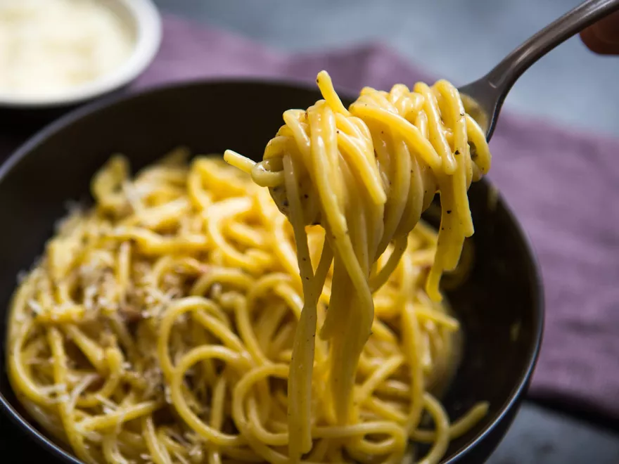

ODIN'S CARBONARA

Odin's Carbonara
Of all the theories of how carbonara sauce came to be—and there are a lot—the most probable is that it's just an old Roman dish using the
kinds of ingredients that have been kicking around the Italian countryside for centuries. Add to that plenty of freshly cracked black pepper,
a spice so deeply woven into Roman history that it was twice extracted as ransom by invaders, and you have the building blocks of the famed sauce.
But even if you subscribe to one of the other, more spurious origin stories, you have to admit it's a rare and remarkable recipe that includes
ingredients—eggs, cured pork, and cow's- and sheep's-milk cheeses—from all four of the major farm animals, as defined by the Major Farm Animal
Index. (The 1973 version, not the one from '94, which anyone in their right mind would agree was a hot mess—alpacas at number five? Gimme a break.)
While it's fundamentally a simple dish, the challenge of carbonara is cooking the sauce just enough to form a thick, silky coating on the pasta without
accidentally scrambling the eggs. I'll get to how to do that in just a second, but first I want to go over a few smaller decisions you'll have to make
before starting—namely, choosing your cut of pork, deciding whether to use whole eggs versus just yolks, and picking your cheeses.
Ingredients
- Kosher salt (see note)
- 1 pound (450g) dried spaghetti (see note)
- 1/2 cup diced guanciale, pancetta, or bacon (about 3 ounces; 85g) (see note)
- 3 tablespoons (45ml) extra-virgin olive oil, divided
- 2 whole large eggs plus 6 yolks
- 1/4 cup grated Pecorino Romano (about 1 ounce; 25g), plus more for serving
- 1/4 cup grated Parmigiano-Reggiano (about 1 ounce; 25g), plus more for serving
- 1 teaspoon freshly ground black pepper (ground medium-coarse), plus more for serving
Steps
- Bring a pot of salted water to a boil. Add pasta and cook, stirring, until al dente.
- Meanwhile, combine guanciale (or pancetta or bacon) with 2 tablespoons (30ml) olive oil in a large skillet and cook, stirring frequently, over medium
heat, until fat has rendered and guanciale is crisp, about 7 minutes.
- In a large, metal heatproof mixing bowl, whisk together whole eggs and yolks, Pecorino Romano, Parmigiano-Reggiano, and black pepper.
- Using tongs and/or a strainer, transfer pasta to skillet with crisped guanciale and its fat; be sure not to drain boiling pasta water.
Add remaining 1
tablespoon (15ml) olive oil to pasta and stir to combine; let cool slightly.
Scrape pasta, pork, and all the fat into the egg mixture.
Measure 1/2 cup (120ml) pasta-cooking water
- Set mixing bowl over pot of boiling pasta water (make sure bottom of bowl does not touch the water) and cook, stirring quickly with tongs, until
sauce thickens to a creamy, silky consistency and leaves trails as you stir.
Remove from heat, season with salt if needed, and divide into bowls. Serve right away, topping with more grated cheese and freshly ground pepper
as desired.
Up, up, and away!